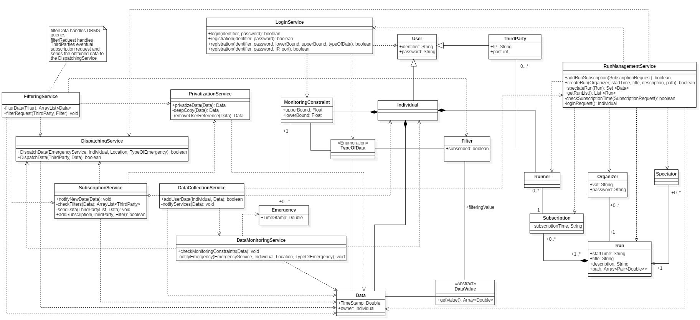

The purpose of this document is to provide a more technical description over the
architecture of the TrackMe application system. The Design Document aim is to describe the architecture paradigm on wich the system should be based and its services’ components (how they are connected to each other,
their main purpose and their runtime view). It also describes the implementation,
integration and testing plans.
The Scope of the TrackMe system remains the same as specified in the RASD Document, the service aims to provide its users with a powerful tracking and data monitoring service that dependending on user interests can be used both in a passive or active way, and to which major Third parties can revolve to obtain big volumes of data for study purposes and organize runs.
API:
Application programming interface
DB:
Database
DBMS:
Database Management System
DD:
Design Document
JMQS:
Java Message Queue Service
[Gn]:
n-th Goal
[Rn]:
n-th Functional requirement
The first chapter gives an introduction to the DD explaining what is the aim of
this document.
The second chapter illustrates via text description and graphs the
architecture and the components of the system underlying the connection between
them and their principal operations. Here there are also the sequence diagrams that
are used to describe the runtime view of the components.
At the end of the chapter there is a description of the selected architectural styles and patterns.
The third chapter describes how the components of the system fulfill the requirements specified in the RASD document explaining which method of the components is used for every requirement.
The fourth chapter gives instruction on how it could be the best way to proceed in the implementation, the integration and the testing. At the begin describes the most appropriate plan for the implementation, then gives a description of how the component should be intregate between themself and finally describes the testing plan and the approach that should be adopted.
The fifth chapter is about the mockup referring to the mockup presented in the RASD document.
The sixth chapter shows the effort spent by each group member on the various section of the project.
Depending on the functionality the system software should rely on different types of architecture, traditional requests are served via a Client-Server paradigm implementation while the most active operations are performed following the Publisher-Subscriber paradigm.
The system should be structured as follows:
A server node and a Database Management System.
The server node has the task to receive data from the registered users both sending it to the DBMS and elaborating it, along with checking if such data respect any possible constraints of the AutomatedSOSUser could have set, alerting the Emergency Service on need.
Upon new data arrival the server has the task to check if any of it matches filters of subscribed third parties and in such case proceeds to forward said data to the specific Third Party, it also has to handle Third Parties subscription requests, single filters request and emergency notifications, to achieve these tasks it is linked directly with the DBMS, for mapping and localization purposes both User’s client and the TrackMe system communicate with external cloud services.
Below are described via a High Level Architechture graph the main components of our system and their main processes.
The main core of our system is rapresented by the Router and Dispatcher processes in the TrackMe System, toghether with the DBMS that is accessed by them to read and store collected data.
The different Users of the services are provided with different Point Of Access depending on their needs, respectively implemented on different platforms like web browser for Organizers and Third Parties and mobile application for the data providing User.

In the following diagram we have depicted more accurately the services, the links between them and how they are interfaced with each other. Notice the DBMS interface is generalized because it depends on the choiche of the DBMS technology and in order to mantain things more general we didn’t want to rule out any option.
As for DBMS here the External Services are not specifically charachterized to allow a consequent choiche of the most appropriate service basing on the needs of the application.

We assume that the routing functionality is responsible of forwarding messages to the directly interested services depending on the client that has performed the request.
The diagram below describes the data model of the entire application, more specifically the data rapresentation in memory used by software components to achieve their objective.
The dispatching functionality implemented by the dispatching service is built on top of the architecture described below:

Data management is operated by most of the services previously listed in their implementation such as FilteringService, SubscriptionService and PrivatizationService.
The architecture is supposed to resemble the publish/subscribe paradigm, in order to achieve this type of communication, the data model includes information to reach the subscribed client everytime an appropriate update about the subscribed topic is performed.
Information about where to send the subscription updates are collected upon registration from the Third Party.
Subscriptions are stored into the Database, on first boot the system loads in an appropriate data structure the tuples stored, extracting from the relational database couples of subscription topic and subscriber, thus strongly reducing the response time on each update to be performed.




In the above graphs we made use of async messages to represent the fact that the messages are sent in a costant flow and a single one doesn’t have to result in a blocking action both for the clients and the services taking care of it.

The aim of the following diagram is to highlight the relationships between services implemented on the server of the entire system, in particular the interfaces exposing their public methods and the use relation between them.

The main architectural style adopted, on which the communication with third party relies, is the Publisher/Subscriber paradigm.
It has been adopted to be able to manage the inherent transient nature of communication and asynchronicity of the services offered by the system. At the opposite the classical client-server architectural style doesn’t fit with the purpose of queueing and dispatching of messages, as it would have made necessary establishing a new connection everytime the system had to send new data.
This type of paradigm is used anyway on a different level in order to handle users’ interactions via the provided interfaces, as for registration, run enrollment and other operations that can be performed in a single connection instance.

As described in the picture above, a part of the Database is devoted to store topics and subsricptions of Third Parties along with the pure application data.
Upon receiving a new data the system performs a check on the subrsciptions and relative topics and eventually dispatches, after an optional further elaboration of the data operated by internal services, new information to the interested Third Parties.
The basical structure relies on a message queueing middleware (implemented by JMQS in our choiche) that ensures message ordering at receiver side and also recovery on message loss.
The address lookup database figured above, is stored in the system along with other data as described in the Component View Class Diagram : each record contains the EndPoint reference (Transport Level Address [IP, Port]) of the receivers of the service.
The system is designed to allow future scalability improvements on need i.e. by means of a routing application layer on top of which could be applied the current implementation to improve the delivery time by the usage of a routing algorithm and spreading the communication overhead on different nodes.
Notice that in order to model the server-side data context we adopted an objective memory representation, performing a one to one mapping with the relational model of the Database to obtain a faster access intermediate representation of the queried data, making them available to processes for elaboration.
This type of rapresentation could be compared with the model part of the MVC pattern.
Regarding the client level the Individual user is provided with an application deployed on his mobile, interfacing with his activity monitoring device APIs that takes care both of allowing the user to interact with the services offered by the server and to communicate monitored data to the appropriate service.
Third Parties for the Data4Help service and Organizers for Track4Run are provided with a web portal through which they can perform active interactions with the server such as sending Filtering Requests or creating a new Run for the Users, while passive interactions such as data-sending regarding subscriptions to certain topics are perfomed on a different channel, on the IP and port provided at the moment of registration and stored in the Database.
[R10] The LoginService interface specifies a method registration() through which the AutomatedSOSUser is able to specify parameters and thresholds used to monitor his health status.
[R10] [R11] DataMonitoringService receives the new data from DataCollectionService, checks the user’s thresholds and forwards the Emergency that has to be notified to the DispatchingService, which contacts the Local Emergency Service.
[R16] As above, the method getRunList() allows to fulfill this requirement.
[R17] RunManagementService allows a user to subscribe him/herself to a run via addRunSubscription method which exploits the LoginService interface to handle the login phase that is required in order to complete succesfully the registration.
The way in which would be more appropriate to implement components and subsystem is described below. In the choice are mostly taken into account the inherent data centric nature of the services offered by TrackMe and the possible difficulties dealing with the JMQS service.
According to what is said above, is easy to imagine the order listed below:
Notice that following this path it will be natural to follow a bottom up integration between components, avoiding the need of writing stubs that don’t fit well with the development of this type of application. In fact, the injection of fake data, as a tecnique to write very specific drivers for many of the services (in the unit and integration testing as well), results therefore the best approach, also if we consider the fact that real data won’t be available until the deployment of the system.
The TrackMe system, as mentioned in the previous section, is meant to be offering highly data-centered services, thus forcing a specific integration order of the services composing it.
The order and approach to be followed is described below.
- Integration between components and the DBMS :
Following this section are listed the system services that interface and interact with the external DBMS to accomplish their tasks:
* LoginService, DBMS
* DataCollectionService, DBMS
* DataMonitoringService, DBMS
* SubscriptionService, DBMS
* FilteringService, DBMS
* RunManagementService, DBMS
- Integration between the components of the system server :
This group is related to the inner links and interactions between system services, both regarding data management and requests handling:
* RunManagementService - DataCollectionService
* RunManagementService - LoginService
* RunManagementService - DispatchingService
* DataCollectionService - DataMonitoringService
* DataCollectionService - SubscriptionService
* SubscriptionService - DispatchingService
* SubscriptionService - PrivatizationService
* FilteringService - SubscriptionService
* FilteringService - PrivatizationService
* FilteringService - DispatchingService
* DataMonitoringService - DispatchingService
- Integration between clients : This kind of interactions should be allowed by system APIs and their configurations on respective clients
- Integration between the components and (other) external services :
External services can be used for ease of use, like an external maps service, this integration should be implemented on the services that need it as :
* RunManagementService - ExternalMapsService
* Clients - ExternalMapsService
Considering the different use cases of the System the most appropriate test sets are the systematic one, this approach allows to examine if the System actually fulfills the specifications that are stated in the requirements specification document. Using this test sets we acknowledge that it will be difficoult to find any minor bugs in the System or verify the behaviour of the System in response to several different inputs, which is a possibile scenario given the nature of the service the System is offering, however a systematic approach could at least verify that the main functions are working as supposed.
In order to accomplish a good testing verification the testing plan should be as follows, first of all it would be useful for the developers to use unit tests to have feedback and make changes easily.
After that it is essential to plan an integration testing so that the integration between the components of the System is tested.
Since for the integration we follow a bottom-up strategy we should use this approach even for the integration testing, by doing so we are able to verify the integration part from the beginning and not only at the completion of the development. In this strategy testing takes place from the lowest level modules, then high level modules and at the end integrating the high level modules to the low level modules, drivers are used as temporary modules (simulate the behaviour of upper level modules).
Once the System is completely developed and the compontend are fully integrated and tested is important to use System testing, performed on the entire system evaluating the system’s compliance with its specified requirements.
Purpose of these final tests referring to our application are to evaluate its performance in differents scenarios such as:
- its behaviour in response a different and various inputs
- crash recovery and failure handling
- resiliency to data and connection volumes (i.e. handling of simultaneous requests)
- reliability: the System has to be reliable with a ratio greater then 99,95% in order to comply with the request stated in the requirements document, mainly regarding the AutomatedSOS service to be able to detect and notify an emergency whenever irregolar data are sent to the server within a 5 seconds timespan
- availability: the System has to offer a very high availability ratio (at leat 99,9%) for the application which is always operating in order to be able to receive new data and handle requests
- efficiency: this parameter is relevant in the data management section since this service is thought to be receiving constant flows of data to store into memory and forward each of them to the appropriate component, therefore it is necessary to optimize the cost of the data handling and elaboration algorithms
- scalability: the application has to be scalable depending on the current load in order to handle an always changing amount of connections and requests
According to the design decisions and to better understand how the users should interface with the application we made some changes in the mock-ups presented in the href="https://github.com /gianmarco27/Poggi-Stagliano-Stucchi/blob/master/RASD/RASD%20v2.md#a1-user-interfaces">RASD document at the section 3.A.1.
| Section | Time spent |
|---|---|
| Introduction | 1H |
| High Level Architecture and Deployment | 2H |
| Component View | 8H |
| Runtime View | 6H |
| Component Intefaces | 2H |
| Selected architectural styles and patterns | 1H |
| Requirements Traceability | 3H |
| Implementation, Integration and Testing Plans | 4H |
| Mockup | 1H |
| Section | Time spent |
|---|---|
| Introduction | 1H |
| High Level Architecture and Deployment | 2H |
| Component View | 4H |
| Runtime View | 6H |
| Component Intefaces | 2H |
| Selected architectural styles and patterns | 1H |
| Requirements Traceability | 3H |
| Implementation, Integration and Testing Plans | 4H |
| Mockup | 1H |
| Section | Time spent |
|---|---|
| Introduction | 1H |
| High Level Architecture and Deployment | 2H |
| Component View | 8H |
| Runtime View | 6H |
| Component Intefaces | 2H |
| Selected architectural styles and patterns | 1H |
| Requirements Traceability | 3H |
| Implementation, Integration and Testing Plans | 4H |
| Mockup | 1H |